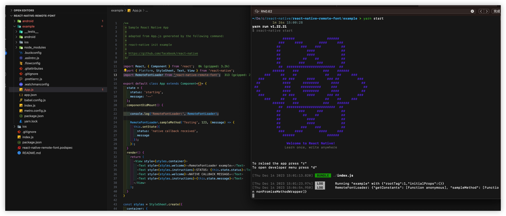
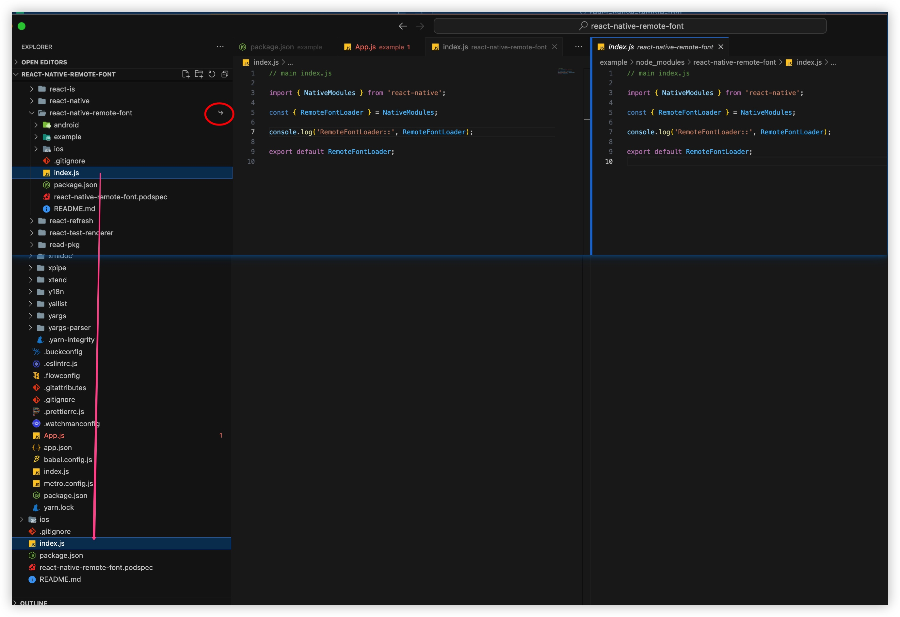

用脚手架 制作一个RN库 放npm
By yestin
脚手架 create-react-native-module
脚手架使用（顺利）
- 工具安装
npm install -g yarn
npm install -g create-react-native-module
- 脚手架命令
create-react-native-module RemoteFont --object-class-name react-native-remote-font --object-class-name RemoteFontLoader --native-package-id com.yestin.font --platforms ios,android --github-account zyestin --author-name yestin --author-email zyestin@gmail.com --generate-example --example-react-native-template react-native@0.62
过程中发现，若不指定--example-react-native-template react-native@0.62，发现总有这样的报错日志
pod --version failure, aborting with broken example app
Error while creating library module react-native-remote-font
Error: Command failed with ENOENT: pod --version
spawnSync pod ENOENT
at Object.spawnSync (internal/child_process.js:1077:20)
at Object.spawnSync (child_process.js:776:24)
at Function.module.exports.sync (/usr/local/lib/node_modules/create-react-native-module/node_modules/execa/index.js:174:25)
at module.exports.commandSync (/usr/local/lib/node_modules/create-react-native-module/node_modules/execa/index.js:235:15)
at /usr/local/lib/node_modules/create-react-native-module/lib/lib.js:265:17
at new Promise (<anonymous>)
at /usr/local/lib/node_modules/create-react-native-module/lib/lib.js:223:18
成功的日志
CREATE new React Native module with the following options:
name: RemoteFont
full package name: react-native-remote-font
is view: false
object class name: RemoteFontLoader
Android nativePackageId: com.yestin.font
platforms: ios,android
Apple tvosEnabled: false
authorName: yestin
authorEmail: zyestin@gmail.com
author githubAccount: zyestin
license: MIT
useAppleNetworking: false
generateExample: true
exampleFileLinkage: false
exampleName: example
exampleReactNativeTemplate: react-native@0.62
writeExamplePodfile: false
CREATE: Check for valid Yarn CLI tool version, as needed to generate the example project
1.22.21
yarn --version ok
CREATE: Generating the React Native library module
CREATE example app with the following template: react-native@0.62
###### ######
### #### #### ###
## ### ### ##
## #### ##
## #### ##
## ## ## ##
## ### ### ##
## ######################## ##
###### ### ### ######
### ## ## ## ## ###
### ## ### #### ### ## ###
## #### ######## #### ##
## ### ########## ### ##
## #### ######## #### ##
### ## ### #### ### ## ###
### ## ## ## ## ###
###### ### ### ######
## ######################## ##
## ### ### ##
## ## ## ##
## #### ##
## #### ##
## ### ### ##
### #### #### ###
###### ######
Welcome to React Native!
Learn once, write anywhere
✔ Downloading template
✔ Copying template
✔ Processing template
✔ Installing CocoaPods dependencies (this may take a few minutes)
Run instructions for Android:
• Have an Android emulator running (quickest way to get started), or a device connected.
• cd "/Users/yestin/Desktop/code_test/react-native/react-native-remote-font/example" && npx react-native run-android
Run instructions for iOS:
• cd "/Users/yestin/Desktop/code_test/react-native/react-native-remote-font/example" && npx react-native run-ios
- or -
• Open example/ios/example.xcworkspace in Xcode or run "xed -b ios"
• Hit the Run button
Run instructions for macOS:
• See https://aka.ms/ReactNativeGuideMacOS for the latest up-to-date instructions.
Linking the new module library to the example app
yarn add v1.22.21
[1/4] 🔍 Resolving packages...
[2/4] 🚚 Fetching packages...
[3/4] 🔗 Linking dependencies...
warning "@react-native-community/eslint-config > @typescript-eslint/eslint-plugin@1.13.0" has incorrect peer dependency "eslint@^5.0.0".
warning "@react-native-community/eslint-config > @typescript-eslint/parser@1.13.0" has incorrect peer dependency "eslint@^5.0.0".
warning "@react-native-community/eslint-config > eslint-plugin-react@7.12.4" has incorrect peer dependency "eslint@^3.0.0 || ^4.0.0 || ^5.0.0".
warning "@react-native-community/eslint-config > eslint-plugin-react-native@3.6.0" has incorrect peer dependency "eslint@^3.17.0 || ^4 || ^5".
warning "@react-native-community/eslint-config > @typescript-eslint/eslint-plugin > tsutils@3.21.0" has unmet peer dependency "typescript@>=2.8.0 || >= 3.2.0-dev || >= 3.3.0-dev || >= 3.4.0-dev || >= 3.5.0-dev || >= 3.6.0-dev || >= 3.6.0-beta || >= 3.7.0-dev || >= 3.7.0-beta".
[4/4] 🔨 Building fresh packages...
success Saved lockfile.
success Saved 1 new dependency.
info Direct dependencies
└─ react-native-remote-font@0.0.0
info All dependencies
└─ react-native-remote-font@0.0.0
✨ Done in 2.18s.
check for valid pod version in /Users/yestin/Desktop/code_test/react-native/react-native-remote-font/example/ios
Ignoring ffi-1.15.5 because its extensions are not built. Try: gem pristine ffi --version 1.15.5
Ignoring json-2.6.2 because its extensions are not built. Try: gem pristine json --version 2.6.2
1.11.3
running pod install in /Users/yestin/Desktop/code_test/react-native/react-native-remote-font/example/ios
Ignoring ffi-1.15.5 because its extensions are not built. Try: gem pristine ffi --version 1.15.5
Ignoring json-2.6.2 because its extensions are not built. Try: gem pristine json --version 2.6.2
Auto-linking React Native module for target `example`: react-native-remote-font
Analyzing dependencies
Downloading dependencies
Installing react-native-remote-font (1.0.0)
Generating Pods project
Integrating client project
Pod installation complete! There are 48 dependencies from the Podfile and 38 total pods installed.
[!] Your project does not explicitly specify the CocoaPods master specs repo. Since CDN is now used as the default, you may safely remove it from your repos directory via `pod repo remove master`. To suppress this warning please add `warn_for_unused_master_specs_repo => false` to your Podfile.
📚 Created library module react-native-remote-font in `./react-native-remote-font`.
🕘 It took 234511ms.
====================================================
YOU'RE ALL SET!
💡 check out the example app in react-native-remote-font/example
💡 recommended: run Metro Bundler in a new shell
ℹ (cd react-native-remote-font/example && yarn start)
💡 enter the following commands to run the example app:
ℹ cd react-native-remote-font/example
ℹ yarn ios # for React Native 0.60: npx react-native run-ios
ℹ yarn android # for React Native 0.60: npx react-native run-android
⚠ IMPORTANT NOTICES
⚠ After clean checkout, these first steps are needed:
ℹ run Yarn in react-native-remote-font/example/ios
ℹ (cd react-native-remote-font/example && yarn)
ℹ do `pod install` for iOS in react-native-remote-font/example/ios
ℹ cd react-native-remote-font/example
ℹ (cd ios && pod install)
⚠ KNOWN ISSUE with adding dependencies to the library root
ℹ see https://github.com/brodybits/create-react-native-module/issues/308
- 目录结构
ll -alh react-native-remote-font 14:29:53
total 40
.
..
.gitignore
README.md
android
example
index.js
ios
package.json
react-native-remote-font.podspec
android目录
tree react-native-remote-font/android 11:32:42
react-native-remote-font/android
├── README.md
├── build.gradle
└── src
└── main
├── AndroidManifest.xml
└── java
└── com
└── yestin
└── font
├── RemoteFontLoaderModule.java
└── RemoteFontLoaderPackage.java
ios目录
tree react-native-remote-font/ios 11:38:56
react-native-remote-font/ios
├── RemoteFontLoader.h
├── RemoteFontLoader.m
├── RemoteFontLoader.xcodeproj
│ └── project.pbxproj
└── RemoteFontLoader.xcworkspace
└── contents.xcworkspacedata
运行iOS（较顺利）
如RN0.62老样子，App成功启动了，
但弹窗报错React Native: Unexpected token ':'. Expected a ')'
这样改metro-react-native-babel-preset from 0.58.0 to 0.59.0
然后yarn install && npx pod-install 后，
重新Xcode run iOS就OK了

将自定义三方库代码写入（有坑）
输入 本库代码
直接在顶层目录 改三方库代码就行
因为
example内所使用的react-native-remote-font文件，是软链，指向到顶层目录的 
添加 其它依赖库（挺坑）
直接在package.json里添加如上依赖后，yarn && npx pod-install后，Xcode run 报错如下，多次这样后，还是报错。。。
error: Error: Unable to resolve module react-native-fs from /Users/yestin/Desktop/code_test/react-native/react-native-remote-font/index.js: react-native-fs could not be found within the project or in these directories:
/Users/yestin/Desktop/code_test/react-native/react-native-remote-font/example/node_modules
If you are sure the module exists, try these steps:
1. Clear watchman watches: watchman watch-del-all
2. Delete node_modules and run yarn install
3. Reset Metro's cache: yarn start --reset-cache
4. Remove the cache: rm -rf /tmp/metro-*
10 | } from "react-native";
11 | import React, { useEffect, useMemo, useRef, useState } from "react";
> 12 | import RNFS from "react-native-fs";
| ^
按照上面的提示，执行
watchman watch-del-all
rm -rf node_modules
yarn && npx pod-install
也终于在 node_modules下 能看到了 react-native-fs

此时，居然还没有好，报错
Invariant Violation: Native module cannot be null
因Xcode 并没有link到这个库的iOS代码RNFS，Xcode里完全搜不到
于是 往example/ios/Podfile里手动添加link
pod 'RNFS', :path => '../node_modules/react-native-fs'
再npx pod-install后 就好了
我把这个临时方案提供到了create-react-native-module/issues/489#
写Demo测试
从 Google Fonts 扒一些字体链接
const fontInfoList = [
{
fontName: "Ma Shan Zheng",
fontUrl: "https://fonts.gstatic.com/s/mashanzheng/v10/NaPecZTRCLxvwo41b4gvzkXaRMHsCoRTJKKTqxFXqIji1hn3wSpSEA3eSpJy0awdsFt2Zfc6SSE.119.woff2",
},
{
fontName: "Afacad",
fontUrl: "https://fonts.gstatic.com/s/afacad/v1/6NUI8FKMIQOGaw6ahLYEvBjUVG5Ga92uVSQ-9kKlZfNfuw.ttf",
},
{
fontName: "Rubik Bubbles",
fontUrl:
"https://fonts.gstatic.com/s/rubikbubbles/v3/JIA1UVdwbHFJtwA7Us1BPFbRNTENfDxyRXI.ttf",
},
{
fontName: "Preahvihear",
fontUrl: "https://fonts.gstatic.com/s/preahvihear/v29/6NUS8F-dNQeEYhzj7uluxswE49FJf8Wv.ttf",
},
];
测试的核心代码
<ArtText
text="Hello World"
style={{ fontSize: 20, fontVariant: ["proportional-nums"] }}
fontInfo={fontInfoList[fontInfoIndex]}
/>
同样，将安卓代码放进去
运行 Android（挺坑）
yarn android报错
(1) Failed to transform react-native-0.71.0-rc.0-debug.aar
* What went wrong:
Execution failed for task ':react-native-remote-font:javaPreCompileDebug'.
> Could not resolve all files for configuration ':react-native-remote-font:debugCompileClasspath'.
> Failed to transform react-native-0.71.0-rc.0-debug.aar (com.facebook.react:react-native:0.71.0-rc.0) to match attributes {artifactType=android-classes, com.android.build.api.attributes.BuildTypeAttr=debug, org.gradle.category=library, org.gradle.dependency.bundling=external, org.gradle.libraryelements=aar, org.gradle.status=release, org.gradle.usage=java-api}.
> Execution failed for JetifyTransform: /Users/yestin/.gradle/caches/modules-2/files-2.1/com.facebook.react/react-native/0.71.0-rc.0/7a7f5a0af6ebd8eb94f7e5f7495e9d9684b4f543/react-native-0.71.0-rc.0-debug.aar.
> Java heap space
查到是RN的原因了，照着这个回答 react-native/issues/35210#issuecomment-1304536693
在react-native-remote-font/example/android/build.gradle添加如下代码
def REACT_NATIVE_VERSION = new File(['node', '--print',"JSON.parse(require('fs').readFileSync(require.resolve('react-native/package.json'), 'utf-8')).version"].execute(null, rootDir).text.trim())
allprojects {
configurations.all {
resolutionStrategy {
// Remove this override in 0.66, as a proper fix is included in react-native itself.
force "com.facebook.react:react-native:" + REACT_NATIVE_VERSION
}
}
再次 yarn android App成功安装启动，但依然报错
(2) 也遇到 Link问题
- build error 找不到符号
RNFSPackage
/Users/yestin/Desktop/code_test/react-native/react-native-remote-font/example/android/app/src/main/java/com/example/MainApplication.java:31: 错误: 找不到符号
packages.add(new RNFSPackage());
^
符号: 类 RNFSPackage
* What went wrong:
Execution failed for task ':app:compileDebugJavaWithJavac'.
> Compilation failed; see the compiler error output for details.
在build.gradle的dependencies {...}内添加
implementation project(':react-native-fs')
- build error
':react-native-fs' could not be found in project ':app'
FAILURE: Build failed with an exception.
* Where:
Build file '/Users/yestin/Desktop/code_test/react-native/react-native-remote-font/example/android/app/build.gradle' line: 197
* What went wrong:
A problem occurred evaluating project ':app'.
> Project with path ':react-native-fs' could not be found in project ':app'.
在settings.gradle 添加 path
include ':react-native-fs'
project(':react-native-fs').projectDir = new File(rootProject.projectDir, '../node_modules/react-native-fs/android')
运行成功了，但弹窗报错
- build error
TypeError: null ... RNFSManager
TypeError: null is not an object (evaluating 'RNFSManager.RNFSFileTypeRegular')
发现搜不到RNFSManager被引用的地方
于是在MainApplication.java中getPackages(){...}内添加
// react-native-fs
import com.rnfs.RNFSPackage;
packages.add(new RNFSPackage());
至此，终于 不报错了。。。
发布
- 确认本地是否成功登陆npm认证成功
npm whoami
zyestin
若未登录，则执行
npm adduser
- 执行
npm publish
报错，是因为我刚删除了同名库，想重发一个，却失败了。
而npm规则是 24小时才能发布刚删除的同名的包
18 http fetch PUT 403 https://registry.npmjs.org/react-native-remote-font 1544ms
19 verbose stack Error: 403 Forbidden - PUT https://registry.npmjs.org/react-native-remote-font - react-native-remote-font cannot be republished until 24 hours have passed.